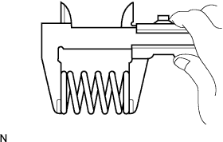

ВЫПУСКНАЯ ТРУБА > УСТАНОВКА |
| 1. УСТАНОВИТЕ ПРИЕМНУЮ ТРУБУ В СБОРЕ |
|  |
При помощи штангенциркуля замерьте длину пружины сжатия в свободном состоянии.
Установите приемную трубу на опору трубы.
 |
С помощью молотка с пластмассовым покрытием и деревянного бруска запрессуйте новую прокладку до тех пор, пока ее поверхность не окажется на одном уровне с выпускным коллектором.
| *1 | Прокладка |
| *2 | Деревянный брусок |
Подсоедините приемную трубу к выпускному коллектору и закрепите ее 2 пружинами сжатия и 2 болтами. Поочередно затяните гайки в несколько этапов.
| 2. УСТАНОВИТЕ ПОДОГРЕВАЕМЫЙ КИСЛОРОДНЫЙ ДАТЧИК |
 |
Установите подогреваемый кислородный датчик с помощью SST.
| *1 | Длина рычага |
Закрепите зажим жгута проводов.
Подсоедините разъем кислородного датчика.
| 3. УСТАНОВИТЕ ДАТЧИК СОСТАВА ТОПЛИВОЗДУШНОЙ СМЕСИ |
С помощью SST установите датчик соотношения воздух-топливо.
| *1 | Длина рычага |
Закрепите зажим жгута проводов.
Подсоедините разъем датчика состава топливовоздушной смеси.
| 4. УСТАНОВИТЕ ЦЕНТРАЛЬНУЮ ВЫПУСКНУЮ ТРУБУ В СБОРЕ (для 3-дверных моделей) |
Установите центральную выпускную трубу на 2 опоры трубы.
Установите новую прокладку и подсоедините центральную выпускную трубу к приемной трубе с помощью 2 болтов. Поочередно затяните гайки в несколько этапов.
| 5. УСТАНОВИТЕ ЦЕНТРАЛЬНУЮ ВЫПУСКНУЮ ТРУБУ В СБОРЕ (для 5-дверных моделей) |
Установите центральную выпускную трубу на 3 опоры трубы.
При помощи штангенциркуля замерьте длину пружины сжатия в свободном состоянии.
С помощью молотка с пластмассовым покрытием и деревянного бруска запрессуйте новую прокладку до тех пор, пока ее поверхность не окажется на одном уровне с приемной трубой в сборе.
Подсоедините центральную выпускную трубу к приемной трубе и закрепите ее 2 пружинами сжатия и 2 болтами. Поочередно затяните гайки в несколько этапов.
| 6. УСТАНОВИТЕ ВЫХЛОПНУЮ ТРУБУ В СБОРЕ |
Установите выхлопную трубу на опору.
Установите новую прокладку и подсоедините выхлопную трубу к центральной выпускной трубе с помощью 2 болтов. Поочередно затяните гайки в несколько этапов.
| 7. ПРОВЕРЬТЕ, НЕТ ЛИ УТЕЧКИ ОТРАБОТАВШИХ ГАЗОВ |